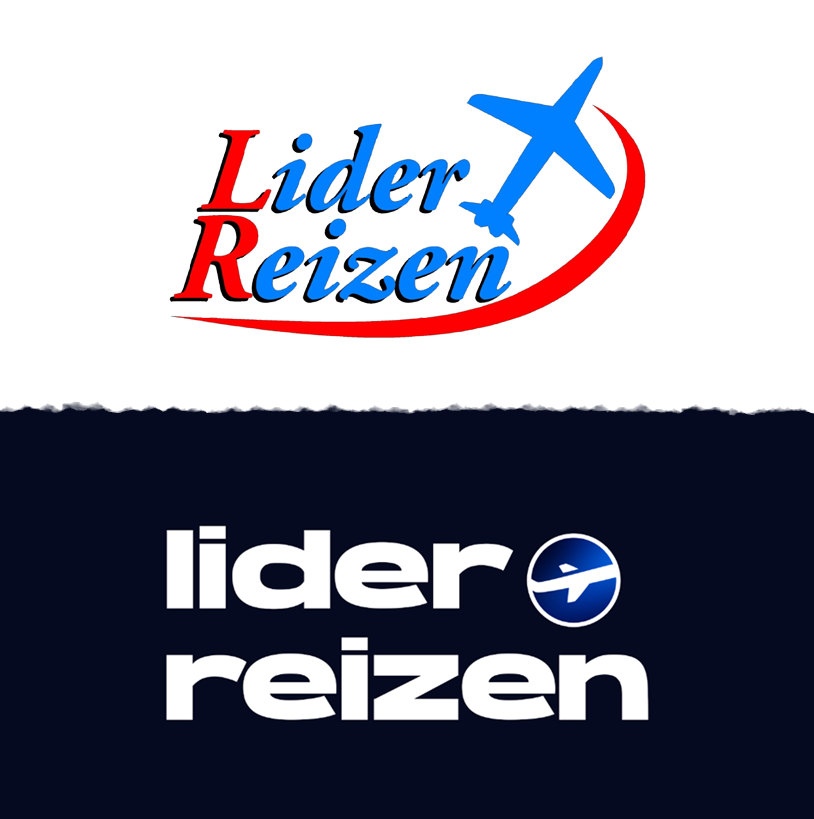

a travel agency based in Helmond.
Lider Reizen is a branding and web design project for a travel agency based in Helmond. The goal was to create a clean, modern landing page and a refreshed brand identity that felt more professional and aligned with current design trends.
I started by redesigning the logo, since the existing one was outdated and hard to work with. After researching typefaces and gathering feedback from users and the stakeholder, I selected a modern sans-serif font and created an airplane icon from a side view to represent travel in a subtle way. The final logo uses a dark blue gradient to convey trust and professionalism—qualities important for a travel brand.
From there, I created a high-fidelity landing page prototype in Figma. While I didn’t have time to go through a full low-fidelity phase, I treated each version as an iteration. I continuously asked for feedback from users and the stakeholder, who suggested things like changing the contrast, adjusting layout spacing, and making sure the design better reflected that it was a travel agency.
I made several refinements across multiple versions—changing background images, adding a partner slider, adjusting font sizes, and simplifying service labels to improve clarity. I also redesigned the “Contact” button for better visual emphasis and tested color contrast and layout variations to find the right balance between modern and professional.
This project taught me how important small visual choices can be for a brand’s perception, and how useful feedback is when refining a design. It also helped me grow in logo design, layout composition, and thinking like both a designer and a developer.